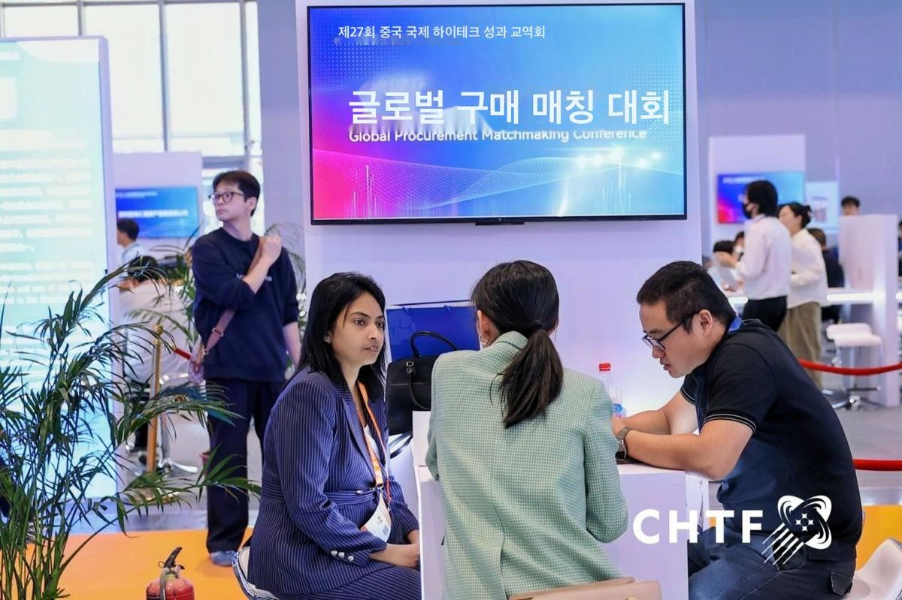
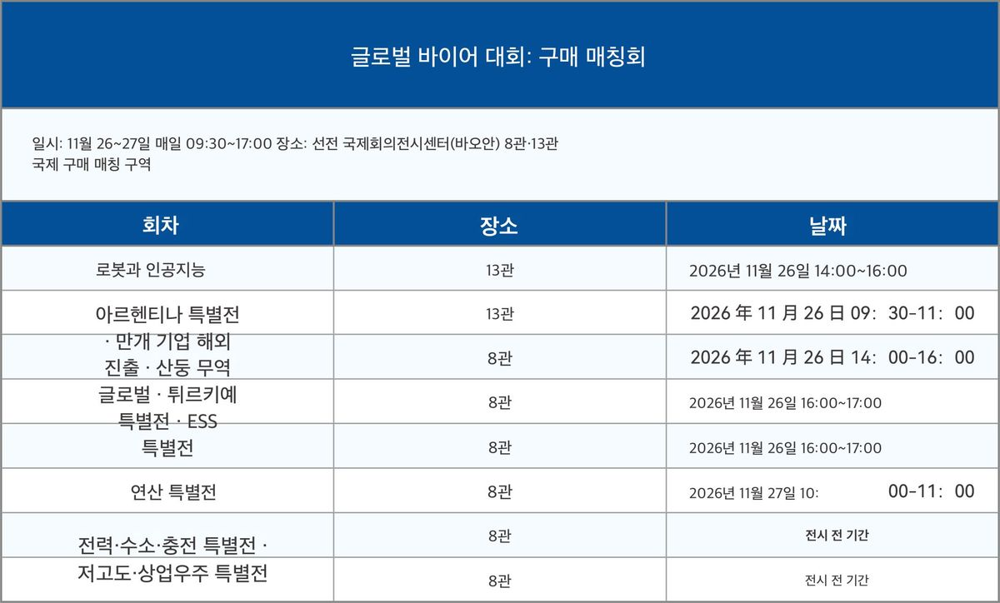

글로벌 구매 매칭대회
첨단기술 성과의 효율적 연결과 사업화를 위해 제28회 중국 국제 하이테크 성과 교역회가 '글로벌 구매 매칭대회'를 엽니다. 로봇, AI, 반도체·집적회로, 신소재, 항공우주, 소비자 전자, 저고도 경제·통용항공, 컴퓨팅·데이터센터 액체냉각, 수소·충전시설, 에너지저장·배터리, 바이오·화학공학, 신형 전력, 연구기관·대학 등 20여 개 핵심 산업을 다룹니다. 전 세계 우수 바이어, 전문 구매단, 업계 선도기업을 초청하며, 고교회의 대규모 데이터베이스로 바이어 조건에 맞는 국내외 공급사를 정밀 매칭해 전용 상담 구역에서 1:1 현장 상담을 잡아 드립니다. 중간 단계 없이 공급사와 직접 만날 수 있습니다.
행사 기간: 2026년 11월 26~28일
행사 장소: 선전 국제회의전시센터(바오안)
1. 지난 행사 성과
지난 대회는 구매 의향 금액 1,200억 위안, 협약 프로젝트 869건으로 역대 최고를 기록했습니다.
국내 바이어: 베이징, 상하이, 톈진, 헤이룽장, 광둥, 산둥, 장시 등 30여 개 성·시·자치구에서 참여했습니다. 차이나모바일, 차이나텔레콤, 남방전망, 화웨이, 텐센트, 바이트댄스, BYD, 폭스콘, 샤오미, 메이디, 거리, CIMC, BGI, 샤오펑 등의 경영진이 직접 구매단을 이끌었습니다.
해외 바이어: 독일, 영국, 프랑스, 러시아, 캐나다, 일본, 한국, 호주, 벨기에, 파키스탄, 체코 등 100여 개 국가·지역의 기관이 참여했습니다. 삼성, 파나소닉, 오라클, 도요타, 포드 등의 구매단도 협력사를 찾으러 왔습니다.

2. 제28회 고교회 글로벌 구매 매칭대회
이번 대회는 '효율, 정밀, 1:1'을 원칙으로 '사전 정밀 매칭 + 현장 1:1 상담 + 사후 지속 관리' 체계를 강화합니다. 바이어가 우수 공급사와 바로 연결되어 구매 과정을 줄이고, 수요 발표부터 협력 성사까지 이어지도록 돕습니다. [전시 전 정밀 매칭] 조직위원회 전문팀이 구매 수요를 깊이 분석해 꼭 맞는 공급사를 선별합니다. [현장 상담] 비공개 전용 상담 구역과 전담 인력을 갖추고 관심 공급사와의 1:1 상담을 잡아 드립니다. [전시 후 관리] 매칭 성과를 끝까지 확인하고, 현장 상담이 기대에 못 미친 바이어에게는 전시 후에도 공급사를 계속 찾아 온라인 매칭을 이어 갑니다.

3. 특별 초청 바이어 혜택
귀사를 이번 글로벌 구매 매칭대회의 특별 초청 바이어로 모십니다. 조직위원회 심사를 통과하면 다음 혜택을 받습니다.
1. VIP 바이어 출입증:
빠른 입장, 동시 개최 무료 회의 우선 참가
2. 비즈니스 상담 구역:
편의시설을 갖춘 전용 공간과 담당자 서비스
3. 정밀 비즈니스 매칭:
엄선한 공급사와 1:1 연결
4. VIP 전용 혜택:
전용 라운지와 음료 서비스
5. 공식 기념품:
대회 전용 기념품 증정
6. 관람 중 식사:
전시 기간 전용 점심 식권 제공
7. 지정 호텔 숙박:
광둥성 외·해외 바이어에게 호텔 숙박 제공
8. 업계 리더 커뮤니티:
업종 전용 커뮤니티 가입으로 고급 인맥 확대
4. 바이어 신청 조건
1. 업종 범위:
AI, 스마트 제조, 로봇 산업체인, 반도체·집적회로, 신소재, 컴퓨팅·데이터센터, 소비자 전자, 항공우주, 바이오·화학공학, 저고도 경제·통용항공, 신에너지, 에너지저장·배터리, 수소·충전시설, 스마트 전력·디지털 에너지, 크로스보더 이커머스, 신형 전력, 시정공사, 스마트 항만·철도교통, 수처리·환경 등
2. 직위 요건:
회장, CEO, 총경리, 대표, 이사, 매니저 및 그 이상
3. 직무 요건:
경영, 구매, 공급망, 생산, 연구개발 등 구매 결정권이나 건의권이 있는 분
4. 참가 요건:
구매 수요가 분명하고 현장 1:1 상담 참석을 약속할 것
5. 제출 서류:
바이어 회신서를 작성·날인해 조직위원회에 회신
5. 바이어 신청 절차
1단계: 아래 QR코드를 스캔해 등록을 마칩니다.
QR코드 스캔 등록
2단계: 2026년 11월 20일까지 《바이어 글로벌 구매 매칭대회 회신서》(아래 양식 내려받기)를 작성해 공인을 찍은 뒤 조직위원회 메일 lyf@zhenweiexpo.com으로 보내거나, 담당자 라이옌팡(18025358031)에게 연락하세요.
6. 공급사 신청 절차
2026년 11월 20일까지 《공급사 글로벌 구매 매칭대회 회신서》를 작성해 공인을 찍은 뒤 조직위원회 메일 lyf@zhenweiexpo.com으로 보내거나, 담당자 라이옌팡(18025358031)에게 연락하세요.
참가사는 무료, 비참가사는 유료 예약
7. 양식 내려받기
여기를 눌러 내려받기:
바이어용: 제28회 고교회 '글로벌 구매 매칭대회' 회신서 ↗
여기를 눌러 내려받기:
공급사용: 제28회 고교회 '글로벌 구매 매칭대회' 회신서 ↗
조직위원회 사무국 문의 전화(평일 9:00~18:00): +86 18194055260, +86 13352917481, +86 13302319440. 이 행사의 최종 해석권은 고교회 조직위원회 사무국에 있습니다.